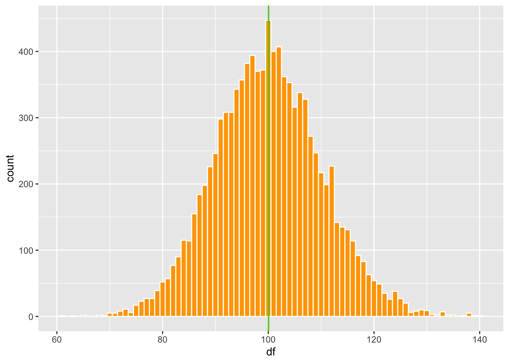
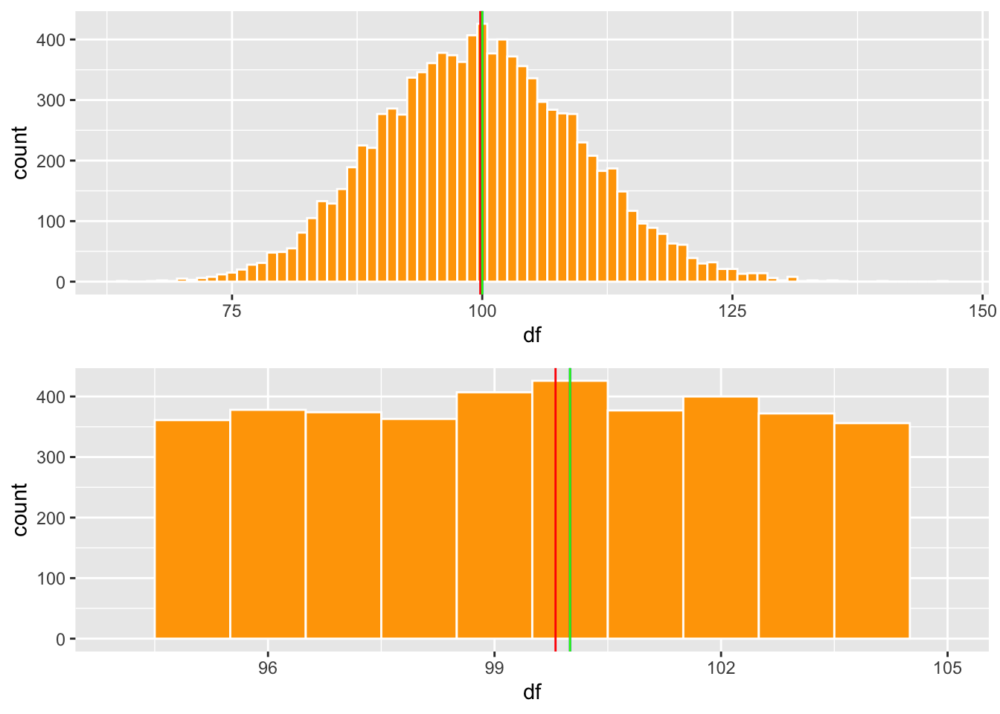

Medidas de tendencia central
Fecha de la ultima revisión
## [1] "2020-11-14"

library(ggplot2)
library(Hmisc)
library(gridExtra) # Un paquete para organizar las figuras de ggplot2
library(statip)Medida de tendencia central
La medidas de tendencia central se llaman así, porque el valor indica la distribución de los datos y los indices tiende a estar en el centro de la distribución. Hay por lo menos 16 tipos de medidas de tendencias centrales https://en.wikipedia.org/wiki/Central_tendency. En este curso estaremos solamente mencionado 3 de estas medidas.
- El promedio a arithmetico
- La mediana
- La moda
Calculando el promedio
Aquí creamos una lista de datos con la función c( ) y con la función mean podemos calcular el promedio. El promedio es la suma de los valores divido por la cantidad de valores en la lista.
\[\bar{x}=\frac{\sum_{i=1}^{n}x_i}n\]
## [1] 5Cuando el promedio no esta localizado en el centro
Digamos que yo tengo la cantidad de semillas producida por 11 plantas, la primera no produjo semillas, la segunda 2 semillas y subsiguientemente hasta la ultima que tuvo una producción de 1000 semillas. Nota que en este caso el promedio no se encuentra el el centro de los datos, por consecuencia NO es un buen indicador de la tendencia central de los datos. Cuando esto ocurre uno no debería usar el promedio para describir la tendencia central de los datos.
## [1] 95## [1] 95La mediana
Con n impares
Cuando el promedio no es indice adecuado de la tendencia central tenemos dos alternativas, la mediana y la moda. La mediana es el valor en el centro después de haber organizado los datos del más pequeño al más grande.
\[Mediana\ =\frac{\left({x}_{n+1}\right)^{th}}{2}\] Donde n es la cantidad de valores en orden del más pequeño al grande. Por consecuencia se selecciona el valor en el centro de todos los valores. Lo que la función de mediana hace es poner los valores en orden y después determina cual es el valor en el centro. Aquí para demostrar los que hace la función 1) creo un una lista de valores, 2) pongo los datos en orden 3) y mirando los valores en orden vemos que el valor 6 es el valor en el centro. Pero este paso no es necesario ya que la función median lo hace automaticamente.
## [1] 13## [1] 6Con n pares
Cuando hay una cantidad de datos pares, los dos valores en el centro son sumado y el promedio es calculado.
\[Mediana\ =\frac{1}{2}* (\frac{\left({x}_{n+1}\right)^{th}}{2}+\frac{\left({x}_{n+1}\right)^{th}}{2})\] En el siguiente caso tanto el valor de 6 y 7 se encuentra en el centro, por consecuencia la mediana es el promedio de estos valores.
## [1] 0 1 2 3 4 5 6 7 7 23 24 26
## [13] 247 43626## [1] 6.5La moda
La moda es el valor más común. Parta encontrar la moda, hay que instalar dos programas. Primero instalar devtools y despues correr el siguiente chunk para instaslar el package modeest, para mode estimates. Quitar # para correr la función.
Activar el packete
Ya pueden ahora usar la mfv para encontrar la moda de conjunto de datos. Lo que vemos es que el valor de 7 es el más comun en la lista de datos.
## [1] 7Cuando es que el promedio, mediana y moda son iguales?
Los tres valores de tendencia central son iguales cuando la distribución es normal, conocida también como en forma de campana. Aquí preparo un lista de datos con distribución normal, y evaluamos donde están los tres valores de tendencia central. Se usa la función rpois, para crear un conjunto de datos al azar con 100000, datos, un promedio de 100.
| df |
|---|
| 85 |
| 109 |
Lo que uno observa es que los tres valores son muy cercano uno del otro.
Podemos visualizar estos datos usamos dos gráfico, En el gráfico de la izquierda se ve una distribución normal con las tres lineas (promedio, mediana y moda). En el gráfico de la derecha se observa la misma información pero solamente los valores entre 96 y 101. Se observa que la mediana y el promedio son igual y la moda varia un poco, se encuentra donde la barra es más alta. Se observa que los tres valores son cerca del centro.
a=ggplot(df1, aes(df))+
geom_histogram(fill="orange", colour="white", binwidth = 1)+
geom_vline(aes(xintercept = pro), colour="red")+
geom_vline(aes(xintercept = med), colour="blue")+
geom_vline(aes(xintercept = mod), colour="green")+
theme(legend.position = "none")
a
b=ggplot(df1, aes(df))+
geom_histogram(fill="orange", colour="white", binwidth = 1)+
geom_vline(aes(xintercept = pro), colour="red")+
geom_vline(aes(xintercept = med), colour="blue")+
geom_vline(aes(xintercept = mod), colour="green")+
xlim(94,105)+
theme(legend.position = "none")
Distribución cuando los tres valores de tendencia centrtal no son iguales.
En estas distribuciones uno observa que hay exceso de vaslores pequeños o grande. Esto resulta en que los tres indices de tendencias centrales no se encuentra cerca uno del otro.
library(tidyverse)
dfb1=round(rbeta(10000, 3,1, ncp = 0),3)
dfb1=tibble(dfb1)
#head(dfb)
df2= round(rbeta(10000, 1,3, ncp = 0),3)
df2=tibble(df2)
#head(df2)- ¿Cual es la linea de promedio, moda y mediana en cada gráfico?
mea=mean(dfb1$dfb1)
med=median(dfb1$dfb1)
mod=statip::mfv1(dfb1$dfb1)
meab=mean(df2$df2)
medb=median(df2$df2)
modb=statip::mfv1(df2$df2)
SesgadoDerecho=ggplot(dfb1, aes(dfb1))+
geom_histogram(fill="orange", colour="white")+
geom_vline(aes(xintercept = mea), colour="red")+
geom_vline(aes(xintercept = med), colour="blue")+
geom_vline(aes(xintercept = mod), colour="green")+
theme(legend.position = "none")
SesgadoIzquierda=ggplot(df2, aes(df2))+
geom_histogram(fill="orange", colour="white")+
geom_vline(aes(xintercept = meab), colour="red")+
geom_vline(aes(xintercept = medb), colour="blue")+
geom_vline(aes(xintercept = modb), colour="green")+
theme(legend.position = "none")
SesgadoDerecho

library(ggpubr)
#ggarrange(c,d, nrow=2, ncol=1)
library(grid)
#grid.arrange(rectGrob(), rectGrob())
#marrangeGrob(c,d, nrow=2)Variables binomial
En el siguiente ejemplo podemos ver claramente que las medidas de tendencias central no son adecuada.
Primero producimos un conjunto de datos que tiene solamente dos alternativas 0 y 1. Para facilitar los datos e imaginar lo que quiere decir estos datos que cuando es un 0 la persona no tiene hijos y cuando es un 1 tiene hijos.
| dfBin |
|---|
| 0 |
| 1 |
| 1 |
| 1 |
| 1 |
| 1 |
## [1] 0.5983ggplot(dfBin, aes(dfBin))+
geom_histogram(fill="orange", colour="white")+
geom_vline(aes(xintercept = mea), colour="red")+
geom_vline(aes(xintercept = med), colour="blue")+
geom_vline(aes(xintercept = mod), colour="green")+
theme(legend.position = "none")